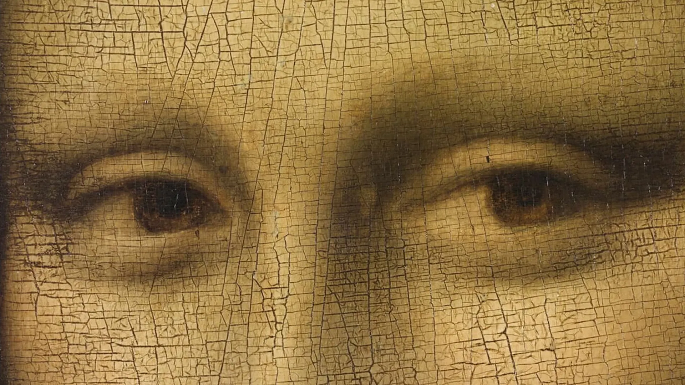
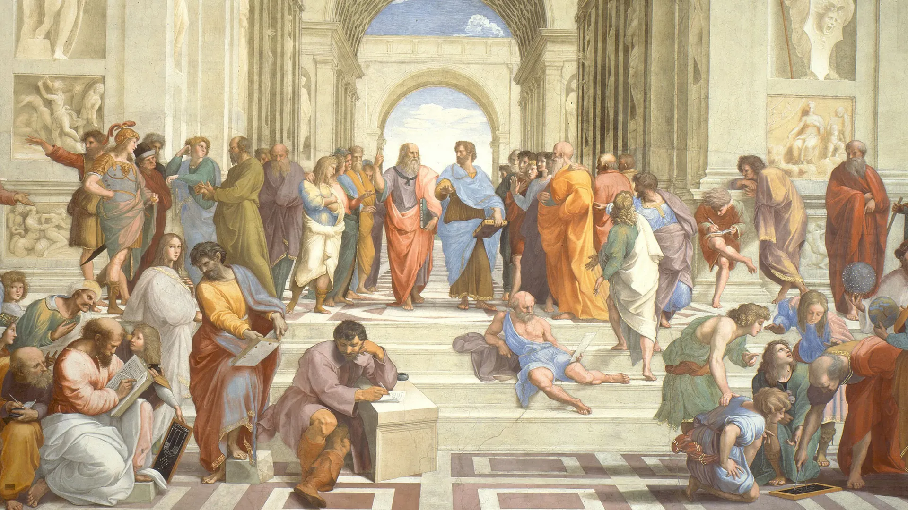
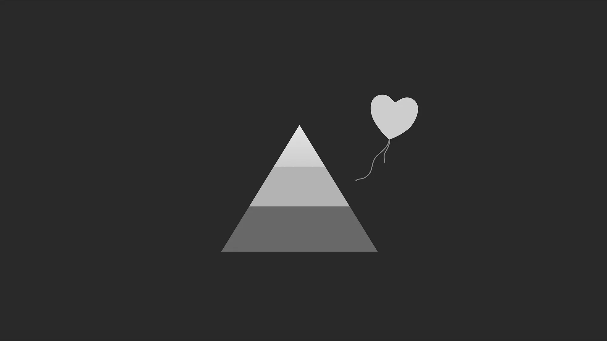
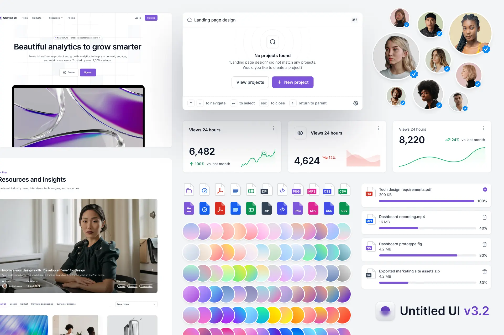
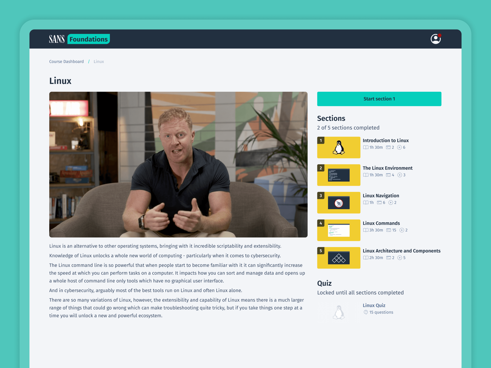
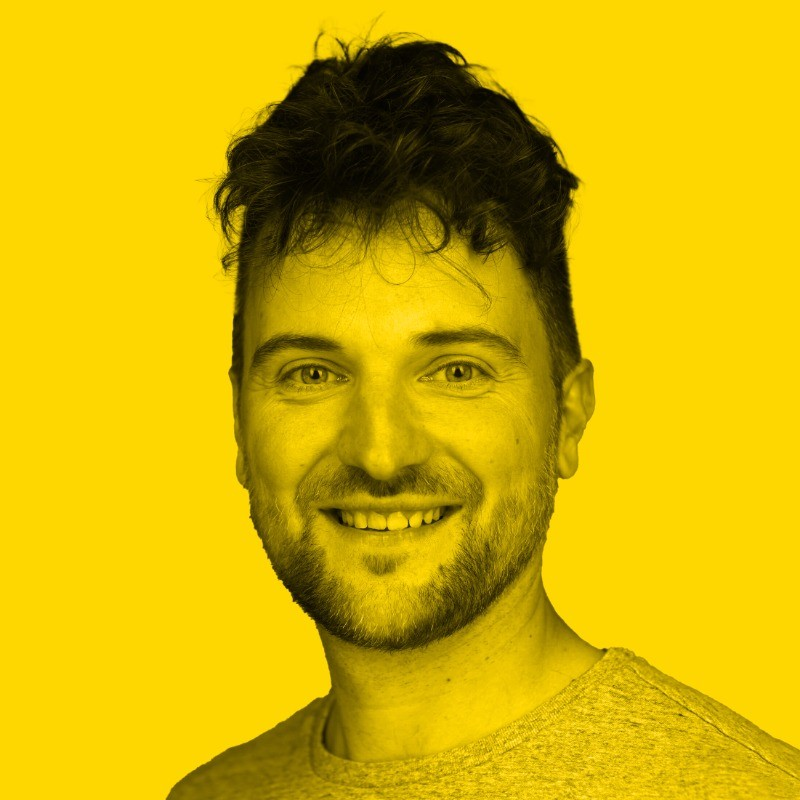
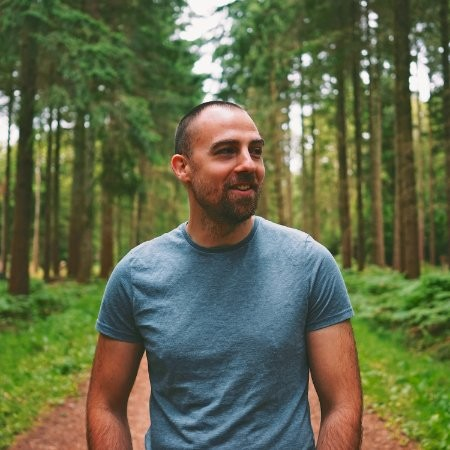

Considered,ethical design
Simon Mauro Guido — Lead Product Designer at SANS and featured writer for UX Collective. Interested in thoughtful, ethical design and the consequences of the things we build.
The Journal
Writing on design judgement, ethics, systems thinking and human behaviour.
View more publications ↗The safest decision is rarely the right one
What we can learn from Linear about trusting judgement without ignoring evidence

When users change their behaviour to game the algorithm
How our awareness is breaking the social media algorithm

Designing for human desires
Exploring the modern relevance of Epicurus’ teachings for product designers
What's the difference between design values and principles?
What should our design values and principles be, and what’s the difference between them?

Practicing ethical design
Why we all need to take more responsibility for the platforms we design
Projects
Selected product design work and the thinking behind it.

SANS UI
A custom design system for the product ecosystem across SANS

Designing motivation into online learning
Applying behavioural psychology to make a demanding course feel manageable
Shots
Interface snapshots from products I’ve designed

About
I care about making things that are useful, considered and purposeful — and about the decisions that shape them. I'm particularly interested in how technology affects the way people think and behave.
Design isn't simply about solving the immediate problem. It's about considering what happens next. What behaviours will this encourage? Who else might it affect? What happens when the happy path isn't the path people take? I value evidence and research, but also the judgement to know when the obvious answer isn't necessarily the right one. My work has taken me from early-stage startups to established products, across cybersecurity, education, SaaS and event technology. I've worked across product design, research, strategy and design leadership, usually in situations where the problem isn't fully defined and the answer isn't obvious.
I lead product design at SANS, where I work across product and design strategy. Alongside this, I write for UX Collective about design judgement, ethics, systems thinking and human behaviour.
Experience
View full experience ↗Education and Certifications
View full education ↗Awards
Speaking
Kind words
View more recommendations ↗
Simon is one of the best product designers I've had the pleasure of working with. He's curious, thoughtful, and highly collaborative. He combines strong design thinking with a rare ability to quickly identify deeper product challenges, build scalable systems, and deliver meaningful improvements for users.
Tim AikinFounder & CCO, Magnetic RockSimon combines exceptional product design craft with sharp strategic thinking and a rare ability to bring teams together around a shared vision. Thoughtful, collaborative, and endlessly curious, he elevates not just the product, but the way teams work together to build it.
Joe CrockerTechnical Product Manager, MotorolaCan I just say that this is the sexiest audience engagement solution for live events! Simon, you're one of the most talented Product Designers I know. Big kudos to someone who puts so much love and passion into their work.
Carsten PleiserCEO, The Event Tech TribeSimon is an exceptionally talented designer with a rare combination of visual craft, attention to detail, and thoughtful communication. His ability to create elegant, well-balanced experiences, combined with his willingness to share knowledge and mentor others, makes a lasting impact on both products and the designers around him.
Paul WallasLead Product Designer, Detected